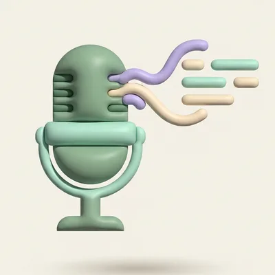
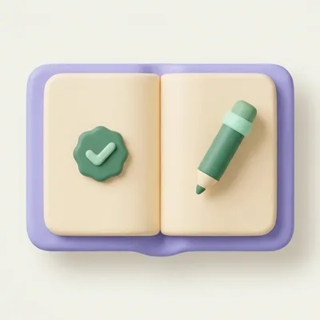
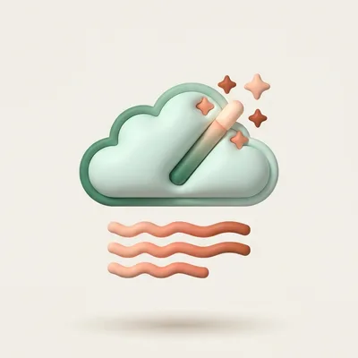
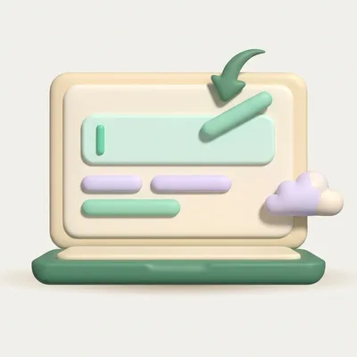
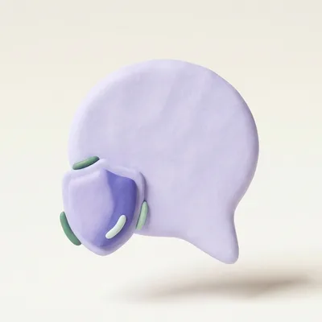
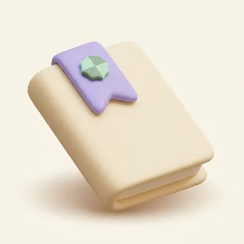
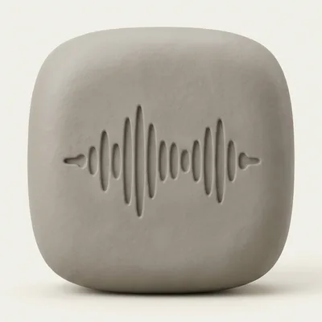
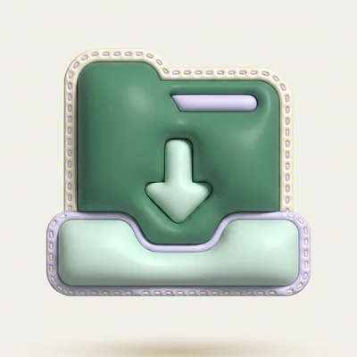
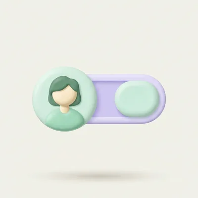
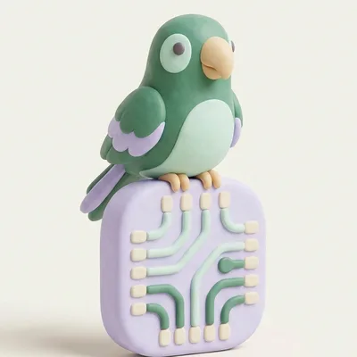

运作方式 · 模型架构
一句话，从说出口到粘贴。
学舌鸟有语音识别底模和中、英文语气模型两种任务：把声音转成文字的语音识别底模，和判断要不要提醒你的学舌鸟语气模型，两个都在你的 Mac 上运行。底模可以自己换，也可以放入你自己训练的模型。
流程
跟着一句话，走一遍。
从你开口到粘贴，只有一步可能离开你的 Mac：你自己选用的 AI 整理。其他都在本机完成。

语音识别
按住快捷键说话，你选的语音识别底模把声音变成文字。

中文整理
套用你的词典修正人名和用语，把字形统一成你设置的简体或繁体，补上标点、修正常见的同音词。

AI 整理口语
去掉口头禅和改口。没有设置 AI 时，改用本机规则。

粘贴
粘贴到光标所在的位置；文字记录存进你自己 iCloud 里的学舌鸟文件夹。

语气提醒
语气模型逐句判断中文或英文，也可混用；再读取当前情境，由个人化层微调。
对话内容仅为示意。
模型架构
每个模型都是一层一层叠上去的。
下面是学舌鸟提供给所有人的部分，上面是你自己积累的部分，只属于你，不会上传。
语音识别

识别完成后再修正人名、专有名词。和用哪个底模无关，换了照样有效。

首次设置时，从列表中选一个下载，例如 SenseVoice、Qwen3-ASR、Breeze-ASR-25。之后可以随时更换。看各模型比较

用你自己的声音训练过的模型。导入后替换底模，随时可以切回。
替换底模，不是叠加
语气提醒

在提醒卡片上点「判断不对」并确认，满 20 条就能在「个人化训练」页训练。只调整语气和提醒的判断。

内置中文模型约 11 MB，英文 EN2 约 15 MB；逐句判断语言，中英混用也可以。两者都在 Mac 上运行。一句话读出七件事：场景、对象、目的、场合、语气、会不会伤人、是否太随便。
更换底模、导入模型
在「管理模型」里更换。
下面是实际的操作界面，橙色圈出来的就是要点的地方。
打开「管理模型」
在学舌鸟左侧选「说话」，找到「语音模型与语言」，点右边的「管理模型」。
左下角也会一直显示当前使用的底模，可以从那里快速切换已下载的模型。
说话
怎么开始、怎么结束、用哪个模型听换一个底模
「已下载的模型」点一下就切换；「可供下载」里的模型，点「下载」，下载完就能用。
模型越大通常越准，也越慢。想要快可以先用 SenseVoice Small，想要中文更准可以试 Qwen3-ASR。各模型比较 →
导入自己的模型
点「已下载的模型」右边的「导入模型…」，选择一个 .gguf 文件。学舌鸟会检查格式、复制文件，再用 Mac 内置的语音朗读一句来试识别。
能识别出文字才会启用，并自动切换过去。失败时会写明原因，原来的模型不受影响。
确认结果，或切回标准版
导入成功会显示试识别的结果。导入的模型标注「自己导入」，也会写明它不支持的功能。
不满意就点「切回标准版」，不需要了也可以删除。
试辨识结果：今天下午3点开会，请准时参加。
导入前的注意事项
- 格式：只接受 .gguf，而且必须是学舌鸟支持的模型类型，例如 SenseVoice、Whisper、Qwen3-ASR。
- 许可：基于别人的底模训练出来的模型，仍要遵守原来的许可协议，例如注明出处、保留模型名称。
- 功能：有些模型不支持实时流式识别或翻译，导入后会标注出来。
- 来源：只导入你信任的文件。试识别在独立的进程中进行，损坏的文件不会拖垮学舌鸟。
导入不会影响这些
- 你的词典：识别后照样修正。
- 学舌鸟语气模型和你的个人化层：与语音识别无关。
- 原来的底模：留在列表里，随时切回。
- 原始文件：已经复制进来，之后移走或删除都没关系。
进阶 · 用自己的声音训练
从学舌鸟导出数据，训练你自己的模型。
学舌鸟负责提供数据、使用你的模型；训练要在你自己的电脑上进行，需要一定的技术能力和 GPU。
导出你的数据
在左侧选「词典与纪录」，滚动到「数据存放位置」，在「我的资料」点「导出」，选一个位置保存 zip。
录音在这台 Mac 上保留多久，由设置里的「录音保留多久」决定（最近 300 段、3 天、2 周、3 个月或永不删除）。想积累更多训练数据，可以设成永不删除，或记得定期导出。
词典与纪录
让学舌鸟认得你的词，并留下每一句zip 里面有什么
录音放在 app/recordings/，每一句的文本记录放在 icloud/年份/ 下的每日 .jsonl 文件，一行一句。
每一行的 audio 是录音文件名，raw 是识别出来的原文，text 是最后粘贴的文字。
整理成训练清单
把录音和“正确的文字”配成一张清单。raw 是模型听到的，不一定对；text 经过 AI 整理，可能删掉了口头禅、加了标点，也不完全等于你说的话。
最可靠的做法：以 raw 为底，逐句听一遍、改成你实际说的字。答案用你想要的字形，例如全部简体。
训练、检查、导入
用你选的底模官方提供的训练工具微调，只调整少量参数，例如 LoRA。训练完用 test.csv 比较错字率，也拿一些别人的声音测一下，确认没有变差，再转成 .gguf，用「导入模型…」放进学舌鸟。
根据我们的测试，大约 30 分钟、几百句的录音就能看到效果，人名、产品名、你的口音最容易改善。
越用越懂你
模型更新了，你的那一层不会丢。
学舌鸟语气模型更新时
推出新版语气模型时，学舌鸟会用你保存下来的反馈，自动在新版上重新训练你的个人化层，通过验证才会启用。你不用从头积累，也随时可以还原到上一版。
更换语音识别底模时
语音识别是整个替换，不是叠加。词典在识别之后才起作用，所以不管用哪个底模，你的词典都有效。
数据存在哪里
你的数据，只在你自己的地方。
你自己的 iCloud
词典、我的资料、改写格式，以及每一句的文本记录，存放在你 iCloud 里的学舌鸟专属文件夹。只有你看得到，Mac 和 iPhone 共用同一份。
只在这台 Mac
录音、个人化素材、你的个人化层，以及语音识别模型文件。不上传，也不放进 iCloud。